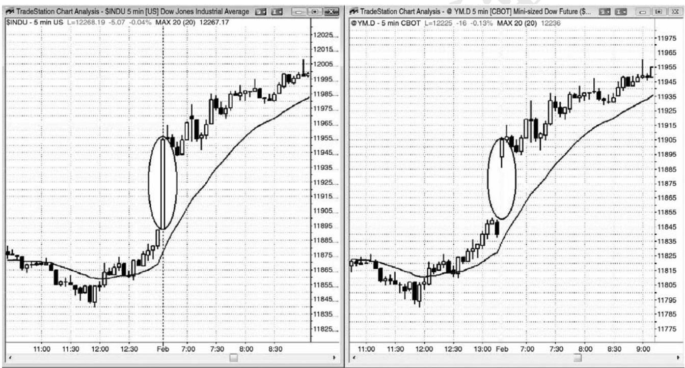
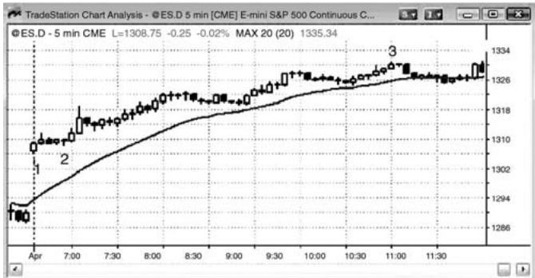
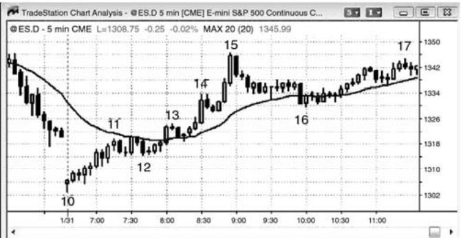
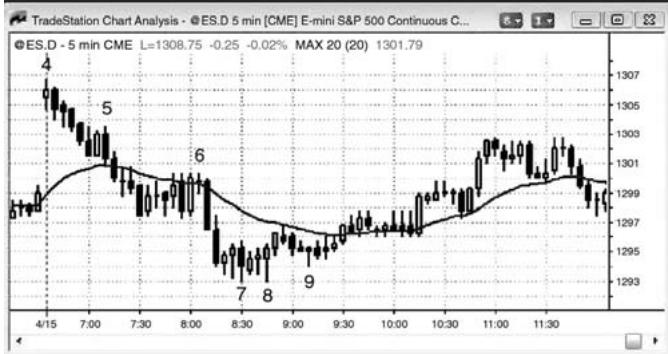
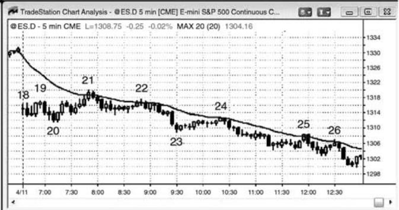

第20章 缺口开盘：反转和延续¶
第 20 章 缺口开盘：反转和延续
任何时间框架上的缺口开盘都意味着我们所讨论的一棒一旦收盘，它不与前一棒重叠。大部分交易日，5 分钟图上都是缺口开盘。可以简单地认为它们就是突破，原因是市场突破了前一天的最后一棒。应该像其他任何突破一样交易，例外之处是交易者们知道大型缺口增加了当天成为趋势日的可能性。缺口越大，当天就越有可能成为一个趋势日，缺口的作用更像是一个尖峰，随后更有可能形成同方向的趋势型通道。举例说明，大型上涨缺口之后有 50%的可能形成一条多头通道，20%的可能形成一段交易区间，30%的可能形成一轮空头趋势。这些可能性仅供参考，因为使用计算机测试寻找精确的数据，容易受到太多变量的影响。那么多大的缺口必须认为是大型缺口呢？上涨缺口后的反弹幅度有多大才能构成通道，而不仅仅是略微上倾的交易区间呢？抛盘幅度多大才构成反转，而不只是深幅回撤呢？作为另一条参考规则，如果缺口是过去 5 天左右最大的缺口，或者如果它比平均日区域的一半大，那么可以认为是一个大型缺口。
5 分钟图上与昨天收盘之间的大型开盘缺口，代表着极端行为，常常在任一方向上形成一个趋势日。日线图上是否也出现缺口并不重要，因为交易是相同的。唯一重要的是市场如何响应这种相对极端的行为——它是接受还是拒绝？缺口越大，它就越有可能成为离开昨日收盘的一个趋势日的起点。当天头几棒中的趋势棒的幅度、方向和数量，常常揭示了随后很可能形成的趋势日的方向。有时，市场会从开盘开始趋势运动一两棒，但是比较常见的情况是向错误的方向测试，然后反转进入到将要持续一天的趋势中。每当你看到一个大型缺口开盘时，假定将出现强趋势是明智的。然而，有时它可能花一个小时才开始，趋势常常从一波两条腿逆势运动开始，比如向均线或双重底或顶的两条腿回撤。有时，会出现第三推，形成一个楔形旗形。一定要把每笔交易的一部分波段化，即便在几笔交易上，你的波段部分被止损踢出。一笔好的波段交易抵得上 10 笔刮头皮交易，所以不要放弃，直到当天明显不是做趋势运动。
缺口应该被看作是一条巨大的、看不见的趋势棒。举例说明，如果有一个大的上涨缺口，随后是一波非常小的回撤，然后是在当天剩余时间一直持续的一波通道型反弹，那么这很可能是一轮缺口尖峰和通道多头趋势，其中缺口便是尖峰。对于电子迷你，你可以观察标准普尔现金指数，看到当天第一棒是一条大型趋势棒，它就对应着电子迷你上的缺口。
缺口开盘交易与其他任何开盘一样，寻找开盘起趋势、失败的突破（反转）、或突破回撤。与其他交易日的唯一区别是，你应该更加积极地波段化；如果当天开始形成趋势，那么就要寻找可以加仓的回撤。交易过程中，你应该一直准备部分获利了结，那可能是刮头皮，但是，只要趋势强劲，就要准备在趋势方向入场更多交易。
仅仅因为趋势日出现几率的增加，并不意味着将要出现一个趋势日。在开盘 5 到 10 棒，当多空双方为了趋势方向而争斗时，大部分大型缺口日都有一些交易区间行为，有些交易区间持续一整天，成为交易区间日。想到所有的可能性，不要把自己局限在一种可能上。你的工作是跟随市场。你没有能力影响市场，当然也无法运用心灵感应使它向你希望的方向运动。如果你错了，就离场，不要希望市场会做出低胜率的事情，突然向你的方向运动。如果出现一个大型缺口，但是价格行为不清晰，那么就假定市场正在形成一段交易区间，准备低买、高卖。在出现一个很有可能引出波段的架构之前，可能有几次刮头皮机会。

如图 20.1 所示，5 分钟图上的缺口开盘就是另一种形式的突破和尖峰。右侧图表上，道指期货合约在开盘向上跳空，但是左侧图表上道琼斯工作平均现金指数上的缺口只是一条大型的多头趋势棒。
图 20.2 缺口可能引起趋势上涨或下跌




P217
大型缺口开盘增加了当天成为趋势日（趋势可能是上涨的，也可能是下跌的）的几率，但是仍然可能变成交易区间日。如图 20.2 中下侧右边图表所示，从棒 18 到棒 22 的横盘运动是大型缺口之后持续几个小时的横盘运动。
缺口越大，当天就越有可能成为缺口方向上的趋势日。举例说明，上侧左边图表中的棒1 是一个大型上涨缺口，当天成为一个多头趋势日。
左侧两张图表显示出大型上涨缺口开盘；上边一张形成一轮多头趋势，下边一张形成一轮空头趋势。在侧两张图表显示出大型下跌缺口开盘；上边一张形成一轮多头趋势，下边一张形成一轮空头趋势。
棒 1 是大型上涨缺口日的多头趋势棒。当天形成一轮开盘起趋势，缺口尖峰和通道多头趋势。
P218
棒 4 是一个十字星，但是它有一个多头实体。市场趋势下跌了一两个小时。截止当日低点棒 7 的价格行为具有突出的尾线、重叠的棒线、以及若干条多头趋势棒，都表明存在双向价格行为。多头能够不断地制造买压，在当天搏斗部分控制市场。
棒10是大型缺口下跌日的一条多头趋势棒，当天成为一个开盘起多头趋势日。
棒 18 是大型下跌缺口日的一条十字星棒。市场继续其横盘价格行为，直到在棒 23 空头尖峰向下突破。开盘十字星是双向交易的征兆，双向交易又持续了几个小时。空头尖峰之后，当天成为一个空头趋势日，在棒 24、25 和 26 的均线测试，空头压倒多头。虽然空头在棒 21和22均线测试处很强，但是仍然没有强到突破交易区间、进入空头趋势。
当出现一个大的上涨或下跌缺口，而且没有强势反转时，顺势交易者们的交易者方程可能很强。举例说明，当市场在棒 1 形成大型上涨缺口，然后横盘运动时，多头趋势日形成的几率上升，可能达到 60%或更高。交易者们预期该区间达到近日平均高度，大约是20点。市场在回补缺口前上涨 20 点的几率可能是 60%或更高，因此，在那头几棒买进的交易者们承担大约 10 点的风险去博取 15 到 20 点的利润，他们有 60%的几率成功，那是一笔很棒的交易。他们所承担的风险可能是运动至缺口中点，于是他们的风险可能是 6 点，而不是 10 点。无论那种情况，这种极好的交易者方程都说明了大型缺口开盘为什么能够提供很棒的交易机会。
P219
第四部分 融会贯通
价格行为就是人类本性的反应，所以是以基因为基础的。无论交易者分析的是什么市场、什么时间框架、还是什么类型的图表，都没有关系，因为它们都是我们人类行为的表象。这第四部分将给出价格行为交易在多重时间框架和各种市场（包括期权市场）中的详细示例。这一部分还讨论了交易者们应该努力去抓住的最佳交易，特别是刚刚入市，仍未稳定获利的初学者。最后，这一部分给出了一些一般性指导原则，供交易者们选择交易和管理交易时参考。
P220